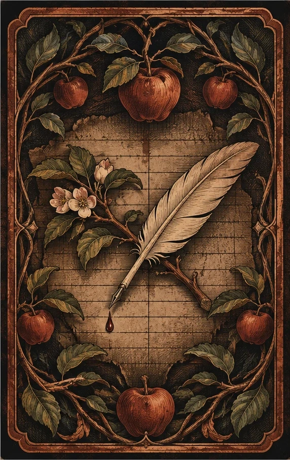
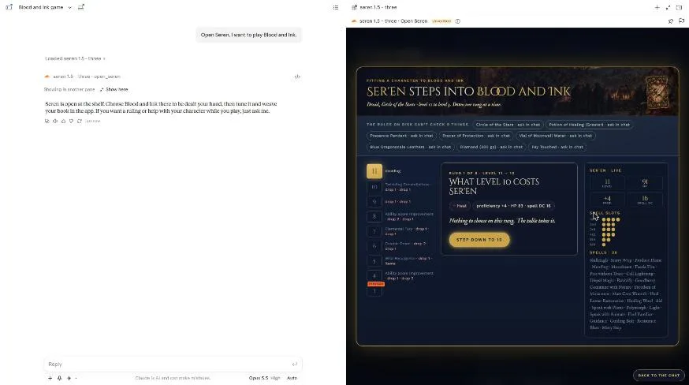
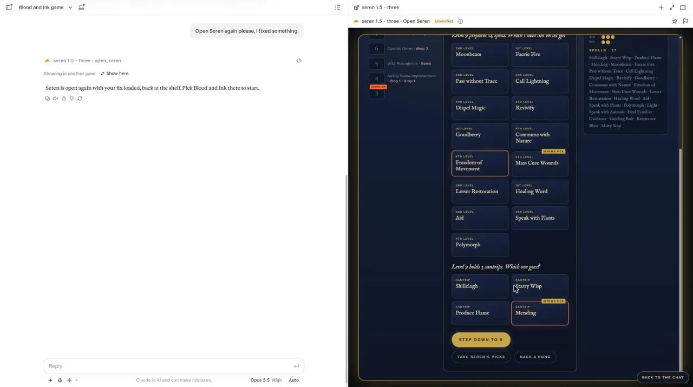
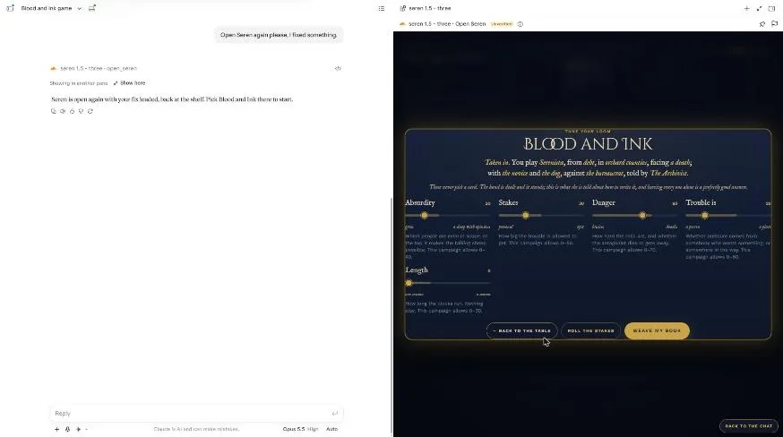

<title>Roads Not Taken</title>
<meta name="claude:viewport-fit-sides" content="cover">
<link rel="preconnect" href="https://fonts.googleapis.com"><link rel="preconnect" href="https://fonts.gstatic.com" crossorigin>
<link href="https://fonts.googleapis.com/css2?family=Cinzel+Decorative:wght@400;700&family=Cinzel:wght@500&family=IM+Fell+English:ital@0;1&family=Spectral:ital,wght@0,300;0,400;1,300&family=Space+Mono:wght@400;700&display=swap" rel="stylesheet">
<style>
/* /next, the spine: one character's real run down the page (80%), what didn't happen in the margin (20%),
   ghost cards and a lantern that opens the road not taken. Seren's table: night felt, gilt, candlelight. */
:root{
  --felt:#0d1424; --felt-hi:#16213d; --card:#1a2540; --edge:#34405d;
  --gilt:#c9a44a; --gilt-hi:#e3c06a; --bone:#e9dcb5; --text:#b4bccf; --mute:#7f8aa6; --ember:#ff6a2b; --flame:#ffb347;
  --deco:'Cinzel Decorative',Georgia,serif; --cin:Cinzel,Georgia,serif; --fell:'IM Fell English',Georgia,serif; --serif:Spectral,Georgia,serif; --mono:'Space Mono',ui-monospace,monospace;
  color-scheme:dark;
}
*{box-sizing:border-box}
html{background:var(--felt)}
body{margin:0;background:var(--felt);color:var(--bone);font:300 16.5px/1.6 var(--serif);overflow-x:hidden}
.k{font:700 10px/1.35 var(--mono);letter-spacing:.2em;text-transform:uppercase;color:var(--gilt)}
.in{max-width:1180px;margin:0 auto;padding-left:max(16px,env(safe-area-inset-left,0px));padding-right:max(16px,env(safe-area-inset-right,0px))}

/* hero: her card arrives at the table */
.hero{position:relative;overflow:hidden;min-height:min(92svh,820px);display:flex;align-items:flex-end;border-bottom:1px solid rgba(201,164,74,.3)}
.hero .art{position:absolute;inset:0}
.hero .art img{width:100%;height:100%;object-fit:cover;object-position:55% 40%;animation:drift 40s ease-in-out infinite alternate}
@keyframes drift{to{transform:scale(1.08) translate(-1%,-1%)}}
.hero .art::after{content:"";position:absolute;inset:0;background:linear-gradient(0deg,var(--felt) 6%,rgba(13,20,36,.55) 55%,rgba(13,20,36,.35)),linear-gradient(90deg,rgba(13,20,36,.85),transparent 70%)}
.hero .in{position:relative;padding-block:40px 46px;width:100%}
.hero h1{margin:14px 0 0;font:400 clamp(30px,6.4vw,64px)/1.06 var(--deco);color:var(--bone);max-width:17ch;text-wrap:balance}
.hero h1 em{font-style:normal;color:var(--gilt-hi)}
.hero p{margin:16px 0 0;font:italic 19px/1.5 var(--fell);color:#cfd4e2;max-width:46ch}
.arrive{display:flex;align-items:center;gap:14px;margin-top:26px;flex-wrap:wrap}
.pc{width:118px;aspect-ratio:2/3;border-radius:9px;border:1px solid var(--gilt);background:linear-gradient(170deg,#24314f,#121a2e);padding:10px;box-shadow:0 0 26px rgba(227,192,106,.35),0 16px 34px rgba(0,0,0,.6);animation:arrive 1.6s cubic-bezier(.2,.8,.2,1) .4s both}
.pc i{display:block;font:700 7px/1.2 var(--mono);letter-spacing:.16em;text-transform:uppercase;color:var(--gilt);font-style:normal}
.pc b{display:block;font:400 18px/1.05 var(--fell);color:var(--bone);margin-top:8px;font-weight:400}
.pc s{display:block;font:italic 12px/1.2 var(--fell);color:#c0705f;margin-top:4px}
.pc em{display:block;font:italic 11px/1.3 var(--fell);color:var(--text);margin-top:6px}
@keyframes arrive{from{opacity:0;transform:translateX(-90px) rotate(-14deg)}to{opacity:1;transform:rotate(-3deg)}}
.arrive .arrow{font:400 28px/1 var(--fell);color:var(--gilt)}
.arrive img{width:78px;aspect-ratio:2/3;object-fit:cover;border-radius:7px;border:1px solid rgba(201,164,74,.7);transform:rotate(4deg);box-shadow:0 12px 26px rgba(0,0,0,.6)}
.arrive small{font:400 12px/1.5 var(--mono);color:var(--text);max-width:24ch}

/* the legend */
.legend{display:flex;gap:16px;flex-wrap:wrap;align-items:center;padding-block:22px;border-bottom:1px solid var(--edge);color:var(--text);font-size:14.5px}
.legend span{display:inline-flex;align-items:center;gap:8px}

/* the spine: 80 / 20 */
.beat{display:grid;grid-template-columns:minmax(0,4fr) minmax(0,1fr);gap:clamp(16px,2.6vw,34px);padding-block:clamp(36px,6vw,70px);border-bottom:1px solid rgba(52,64,93,.6);position:relative}
.beat::before{content:"";position:absolute;left:-1px;top:0;bottom:0;width:2px;background:linear-gradient(var(--gilt),transparent);opacity:.25}
.did .n{font:400 13px/1 var(--mono);letter-spacing:.2em;color:var(--gilt)}
.did h2{margin:10px 0 0;font:400 clamp(25px,3.4vw,38px)/1.12 var(--fell);color:var(--bone);text-wrap:balance}
.did p{margin:12px 0 0;color:var(--text);max-width:60ch}
.did p b{color:var(--bone);font-weight:400}
.shot{margin-top:18px;border-radius:10px;overflow:hidden;border:1px solid rgba(201,164,74,.45);box-shadow:0 24px 54px rgba(0,0,0,.5);max-width:100%}
.shot img{width:100%;display:block}
.cap{margin-top:8px;font:400 11px/1.5 var(--mono);color:var(--mute)}
.hand{display:flex;gap:8px;flex-wrap:wrap;margin-top:16px}
.card{width:104px;min-height:132px;border-radius:7px;border:1px solid var(--gilt);background:linear-gradient(170deg,var(--card),#111a2e);padding:9px;box-shadow:0 0 18px rgba(201,164,74,.18)}
.card i{display:block;font:700 7px/1.2 var(--mono);letter-spacing:.14em;text-transform:uppercase;color:var(--gilt);font-style:normal}
.card b{display:block;font:400 15px/1.1 var(--fell);color:var(--bone);margin-top:6px;font-weight:400}
.card em{display:block;font:italic 11px/1.3 var(--fell);color:var(--text);margin-top:5px}
.quote{margin:16px 0 0;padding:14px 16px;border-left:2px solid var(--gilt);background:linear-gradient(90deg,rgba(201,164,74,.08),transparent);font:italic 18px/1.55 var(--fell);color:#e7dcc0;max-width:60ch}

/* the margin: what didn't happen */
.didnt{position:relative;display:flex;flex-direction:column;gap:9px;align-items:stretch;padding-top:30px}
.didnt .k{color:var(--mute)}
.ghost{border-radius:7px;border:1px dashed rgba(127,138,166,.45);background:rgba(26,37,64,.32);padding:8px 9px;opacity:.6;filter:saturate(.5);transform:rotate(var(--t,0deg));transition:opacity .3s,filter .3s}
.ghost:nth-child(odd){--t:-1.2deg}.ghost:nth-child(even){--t:.9deg}
.ghost i{display:block;font:700 7px/1.2 var(--mono);letter-spacing:.14em;text-transform:uppercase;color:var(--mute);font-style:normal}
.ghost b{display:block;font:400 14px/1.15 var(--fell);color:#aeb6c9;font-weight:400;margin-top:3px}
.ghost em{display:block;font:italic 11px/1.3 var(--fell);color:#8792ad;margin-top:3px}
.ghost s{color:#c0705f}
.beat:hover .ghost{opacity:.78;filter:none}

/* the lantern */
.lantern{all:unset;box-sizing:border-box;cursor:pointer;align-self:flex-start;display:inline-flex;align-items:center;gap:9px;margin-top:4px;padding:8px 12px 8px 8px;border-radius:999px;border:1px solid rgba(255,179,71,.45);background:rgba(255,140,40,.06);color:#ffd59a;font:700 10px/1.2 var(--mono);letter-spacing:.12em;text-transform:uppercase;transition:background .2s,border-color .2s,transform .2s}
.lantern:hover{background:rgba(255,140,40,.14);border-color:var(--flame);transform:translateY(-2px)}
.lantern:focus-visible{outline:2px solid var(--flame);outline-offset:3px}
.lantern svg{width:26px;height:26px;flex:none;overflow:visible}
.lantern .glow{animation:flick 2.6s ease-in-out infinite;transform-origin:50% 60%}
@keyframes flick{0%,100%{opacity:.75;transform:scale(1)}20%{opacity:1;transform:scale(1.08)}45%{opacity:.82;transform:scale(.96)}70%{opacity:1;transform:scale(1.05)}}

@media (max-width:760px){
  .beat{grid-template-columns:1fr}
  .didnt{padding-top:6px;flex-direction:row;flex-wrap:nowrap;overflow-x:auto;gap:8px;padding-bottom:8px;scrollbar-width:thin}
  .didnt .k{flex:none;writing-mode:vertical-rl;transform:rotate(180deg);align-self:center}
  .ghost{flex:0 0 132px}
  .lantern{flex:none;align-self:center;margin-top:0}
}

/* the veil */
dialog{width:min(680px,calc(100vw - 24px));max-height:calc(100svh - 40px);padding:0;border:1px solid rgba(255,179,71,.6);border-radius:14px;background:radial-gradient(700px 360px at 50% 0%,rgba(255,150,50,.12),transparent 70%),linear-gradient(180deg,#16203a,#0d1424);color:var(--bone);overflow:auto;
  box-shadow:0 0 50px rgba(255,160,60,.25),0 40px 90px rgba(0,0,0,.7)}
dialog::backdrop{background:rgba(4,6,12,.72);backdrop-filter:blur(8px) brightness(.6)}
dialog[open]{animation:vin .4s cubic-bezier(.2,.8,.2,1)}
@keyframes vin{from{opacity:0;transform:translateY(16px) scale(.98)}to{opacity:1;transform:none}}
.vin{padding:clamp(20px,4vw,34px)}
.vin .k{color:#ffc678}
.vin h3{margin:10px 0 0;font:400 clamp(24px,3.6vw,32px)/1.15 var(--fell);color:var(--bone)}
.vin p{color:var(--text)}
.vin .quote{border-left-color:var(--flame);background:linear-gradient(90deg,rgba(255,160,60,.08),transparent)}
.vin .row{display:flex;gap:8px;flex-wrap:wrap;margin-top:14px}
.vin .row .card{border-color:rgba(255,179,71,.6)}
.x{position:sticky;top:10px;float:right;margin:10px 10px 0 0;width:42px;height:42px;border-radius:50%;border:1px solid rgba(255,179,71,.5);background:rgba(13,20,36,.85);color:var(--bone);font:400 22px/1 var(--serif);cursor:pointer;z-index:2}
.note{font:400 11px/1.6 var(--mono);color:var(--mute);margin-top:16px}

.end{text-align:center;padding-block:70px 90px}
.end h2{margin:10px auto 0;font:400 clamp(28px,4.6vw,48px)/1.1 var(--deco);color:var(--gilt-hi);max-width:18ch;text-wrap:balance}
.end p{margin:14px auto 0;font:italic 18px/1.5 var(--fell);color:var(--text);max-width:46ch}
.end .lantern{margin:22px auto 0;align-self:center}
.mock{font:400 11px/1.6 var(--mono);color:var(--mute);border-top:1px solid var(--edge);padding-block:18px 28px}

/* v2 (red team): a lantern opens a window of light, not a feature modal */
dialog{border-radius:22px;border-color:rgba(255,179,71,.45);background:radial-gradient(520px 420px at 50% 30%,rgba(255,170,70,.16),transparent 70%),radial-gradient(circle at 50% 50%,#17213b 0%,#0b1120 78%);
  box-shadow:0 0 0 1px rgba(255,190,90,.12),0 0 60px rgba(255,160,60,.3),0 0 160px rgba(255,140,40,.12),inset 0 0 80px rgba(0,0,0,.55)}
dialog::backdrop{background:radial-gradient(circle at 50% 50%,rgba(40,24,6,.35),rgba(3,4,8,.86) 70%);backdrop-filter:blur(7px)}
dialog[open]{animation:window .75s cubic-bezier(.2,.8,.2,1)}
@keyframes window{from{clip-path:circle(0% at 50% 55%);opacity:.4}to{clip-path:circle(150% at 50% 55%);opacity:1}}
.vin::before{content:"";display:block;width:34px;height:34px;margin:0 auto 6px;border-radius:50%;background:radial-gradient(circle,#ffd27a,rgba(255,170,60,.35) 55%,transparent 70%);animation:flick 2.6s ease-in-out infinite}
.vin{text-align:left}
.moment{margin-top:16px;border:1px solid rgba(192,112,95,.4);border-radius:8px;padding:12px 14px;background:rgba(192,112,95,.06);max-width:60ch}
.moment .k{color:#e2a596}
.moment p{margin:6px 0 0;color:var(--text)}
.moment s{color:#c0705f}
.moment b{color:var(--gilt-hi);font-weight:400}
.card.her{border-color:rgba(255,106,43,.6);box-shadow:0 0 18px rgba(255,106,43,.18)}
.card.her i{color:#ff9a66}
.promise{list-style:none;margin:16px auto 0;padding:0;display:grid;gap:8px;max-width:520px;text-align:left}
.promise li{font:italic 19px/1.4 var(--fell);color:#d6d0bd;padding-left:22px;position:relative}
.promise li::before{content:"✦";position:absolute;left:0;top:1px;font-size:13px;color:var(--gilt)}
.end h2{margin-top:26px}
@media (prefers-reduced-motion:reduce){*{animation:none!important;transition:none!important}}
</style>

<header class="hero">
  <div class="art" aria-hidden="true"></div>
  <div class="in">
    <div class="k">Seren 1.5 · an AI dungeon master for one player</div>
    <h1>Bring the character you love into <em>a campaign nobody has ever played.</em></h1>
    <p>Ser’en has been a druid for eleven levels. Tonight she becomes Serenista, and walks into a story that didn’t exist before she arrived. Down the page, what happened. Beside it, what didn’t.</p>
    <div class="arrive" aria-hidden="true">
      <div class="pc"><i>Brought</i><b>Serenista</b><s>Ser’en</s><em>Aasimar druid, from D&amp;D Beyond</em></div>
      <span class="arrow">→</span>
      
      <small>Blood and Ink · level 3 · one night and a morning</small>
    </div>
  </div>
</header>

<main class="in">
  <div class="legend">
    <span><b style="font:400 13px var(--mono);color:var(--gilt)">I.</b> what happened</span>
    <span><span class="ghost" style="padding:2px 8px;opacity:.7"><b style="font-size:12px;margin:0">ghost</b></span> what didn’t</span>
    <span><svg width="18" height="18" viewBox="0 0 26 26" aria-hidden="true"><circle cx="13" cy="15" r="7" fill="#ffb347" opacity=".5"/></svg> a lantern opens the road not taken</span>
  </div>

  <!-- I · she arrives -->
  <section class="beat">
    <div class="did">
      <div class="n">I · THE ARRIVAL</div>
      <h2>A link from D&amp;D Beyond, and she’s at the door.</h2>
      <p>Paste the link. Seren reads her whole sheet: Circle of the Stars, twenty prepared spells, six feats, seven magic items. <b>Blood and Ink is level 3. She is level 11.</b></p>
      <div class="shot"></div>
      <div class="cap">Inside Claude, 26 Nov · real run</div>
      <div class="moment"><span class="k">A small moment</span><p>Only one person at this table is called Seren. The Doorkeeper refuses the dungeon master’s name, so <s>Ser’en</s> becomes <b>Serenista</b>. Her D&amp;D Beyond name stays in the record.</p></div>
    </div>
    <aside class="didnt" aria-label="What didn't happen">
      <div class="k">Not dealt</div>
      <div class="ghost"><i>You play</i><b>Kit Marrow</b><em>Kept her books since you were twelve</em></div>
      <div class="ghost"><i>You play</i><b>Odo Fenn</b><em>Carried her barrels for six years</em></div>
      <div class="ghost"><i>You play</i><b>Wenna Hale</b><em>Took orders, then came home anyway</em></div>
      <div class="ghost"><i>You play</i><b>Pip Callow</b><em>Sang at every one of her harvests</em></div>
      <div class="ghost"><i>Her name</i><b><s>Ser’en</s></b><em>“Something is named Seren. Rename it.”</em></div>
      <button class="lantern" type="button" data-open="v1"><svg viewBox="0 0 26 26" aria-hidden="true"><circle class="glow" cx="13" cy="15" r="9" fill="#ffb347" opacity=".35"/><path d="M9 7h8l-1 3H10z M8 10h10v10a2 2 0 0 1-2 2h-6a2 2 0 0 1-2-2z M11 4h4v3h-4z" fill="none" stroke="#e3c06a" stroke-width="1.4"/><path class="glow" d="M13 13c1.6 1.8 2 3 2 4a2 2 0 0 1-4 0c0-1 .4-2.2 2-4z" fill="#ffcf73"/></svg>Who else walked in</button>
    </aside>
  </section>

  <!-- II · the ladder -->
  <section class="beat">
    <div class="did">
      <div class="n">II · THE LADDER</div>
      <h2>Eight rungs down. Every one a choice.</h2>
      <p>She doesn’t lose levels; she chooses what to let go. Seren suggests, and you decide. <b>Three times, the player went against Seren’s pick.</b></p>
      <div class="shot"></div>
      <div class="cap">Rung 2 of 8 · level 10 to 9</div>
    </div>
    <aside class="didnt" aria-label="What didn't happen">
      <div class="k">Seren’s picks, refused</div>
      <div class="ghost"><i>Level 9</i><b><s>Mass Cure Wounds</s></b><em>Seren said let it go. Freedom of Movement went instead.</em></div>
      <div class="ghost"><i>Level 4 · items</i><b><s>Pearl of Power</s></b><em>Seren said hand it back. She kept it.</em></div>
      <div class="ghost"><i>Level 3</i><b><s>Produce Flame</s></b><em>Seren said drop it. Shillelagh went instead.</em></div>
      <button class="lantern" type="button" data-open="v2"><svg viewBox="0 0 26 26" aria-hidden="true"><circle class="glow" cx="13" cy="15" r="9" fill="#ffb347" opacity=".35"/><path d="M9 7h8l-1 3H10z M8 10h10v10a2 2 0 0 1-2 2h-6a2 2 0 0 1-2-2z M11 4h4v3h-4z" fill="none" stroke="#e3c06a" stroke-width="1.4"/><path class="glow" d="M13 13c1.6 1.8 2 3 2 4a2 2 0 0 1-4 0c0-1 .4-2.2 2-4z" fill="#ffcf73"/></svg>Seren’s version</button>
    </aside>
  </section>

  <!-- III · the deal -->
  <section class="beat">
    <div class="did">
      <div class="n">III · THE DEAL</div>
      <h2>The rest of the hand is dealt, and the fortune teller plays hers.</h2>
      <p>The murder, the wake and the orchard counties are locked. Everything else comes from a hand of three. <b>She came because of a debt.</b> Then the fortune teller turns over the one she’s up against: the Bureaucrat. “Your paperwork is not in order.” She kept it.</p>
      <div class="hand">
        <div class="card"><i>Origin</i><b>Debt</b><em>Someone paid for you, and they are patient</em></div>
        <div class="card"><i>Companion</i><b>The novice</b><em>volunteers</em></div>
        <div class="card"><i>Companion</i><b>The dog</b><em>knows</em></div>
        <div class="card"><i>Told by</i><b>The Archivist</b><em>with footnotes you did not ask for</em></div>
        <div class="card her"><i>Against</i><b>Bureaucrat</b><em>“Your paperwork is not in order”</em></div>
      </div>
    </div>
    <aside class="didnt" aria-label="What didn't happen">
      <div class="k">In her hand, not played</div>
      <div class="ghost"><i>Origin</i><b>Bloodline</b><em>It was in you before you knew</em></div>
      <div class="ghost"><i>Origin</i><b>Legacy</b><em>It was your mother’s</em></div>
      <div class="ghost"><i>Companion</i><b>The scribe</b><em>writes it down</em></div>
      <div class="ghost"><i>Told by</i><b>The Coroner</b><em>cause, then effect, then the body</em></div>
      <div class="ghost"><i>Against</i><b>Parent</b><em>“I am protecting mine”</em></div>
      <div class="ghost"><i>Against</i><b>Schemer</b><em>You meet the plan before the person</em></div>
      <button class="lantern" type="button" data-open="v4"><svg viewBox="0 0 26 26" aria-hidden="true"><circle class="glow" cx="13" cy="15" r="9" fill="#ffb347" opacity=".35"/><path d="M9 7h8l-1 3H10z M8 10h10v10a2 2 0 0 1-2 2h-6a2 2 0 0 1-2-2z M11 4h4v3h-4z" fill="none" stroke="#e3c06a" stroke-width="1.4"/><path class="glow" d="M13 13c1.6 1.8 2 3 2 4a2 2 0 0 1-4 0c0-1 .4-2.2 2-4z" fill="#ffcf73"/></svg>If she’d come by blood</button>
    </aside>
  </section>

  <!-- IV · the dials -->
  <section class="beat">
    <div class="did">
      <div class="n">IV · THE DIALS</div>
      <h2>Then you tell the teller how to write it.</h2>
      <p>Five dials, and none of them picks a card: how absurd, how big the stakes, how dangerous, people or places, how long the clocks run. <b>Serenista’s run left them at the campaign’s own settings.</b></p>
      <div class="shot"></div>
      <div class="cap">“Taken in. You play Serenista, from debt, in orchard counties, facing a death.”</div>
    </div>
    <aside class="didnt" aria-label="What didn't happen">
      <div class="k">Other settings</div>
      <div class="ghost"><i>Hyper-personal</i><b>The Tithe Hall Cup</b><em>a reckoning at one long table</em></div>
      <div class="ghost"><i>At the ceiling</i><b>The Wrenfield Ledger</b><em>forty mourners at a will-reading</em></div>
      <button class="lantern" type="button" data-open="v5"><svg viewBox="0 0 26 26" aria-hidden="true"><circle class="glow" cx="13" cy="15" r="9" fill="#ffb347" opacity=".35"/><path d="M9 7h8l-1 3H10z M8 10h10v10a2 2 0 0 1-2 2h-6a2 2 0 0 1-2-2z M11 4h4v3h-4z" fill="none" stroke="#e3c06a" stroke-width="1.4"/><path class="glow" d="M13 13c1.6 1.8 2 3 2 4a2 2 0 0 1-4 0c0-1 .4-2.2 2-4z" fill="#ffcf73"/></svg>One hand, three settings</button>
    </aside>
  </section>

  <!-- V · the book -->
  <section class="beat">
    <div class="did">
      <div class="n">V · THE BOOK</div>
      <h2>Then she hands you the book.</h2>
      <p>Claude Opus weaves the hand into Blood and Ink’s own story and writes the player’s book: seven chapters, everything in it true, nothing that names the killer.</p>
      <div class="quote">You are Serenista, and the woman who took you in is dead. The whole county has agreed she fell in drink, though in eleven years you never once saw her drink.</div>
      <div class="cap">Claude Opus · 26 Nov · the first lines of her book</div>
    </div>
    <aside class="didnt" aria-label="What didn't happen">
      <div class="k">Same wake, tonight</div>
      <div class="ghost"><i>Another player</i><b>Kit Marrow</b><em>“You keep the books of the Thornby press.”</em></div>
      <div class="ghost"><i>Another weave</i><b>Kit Marrow</b><em>“Agnes Tull kept you, fed you, and taught you to keep her books.”</em></div>
      <button class="lantern" type="button" data-open="v6"><svg viewBox="0 0 26 26" aria-hidden="true"><circle class="glow" cx="13" cy="15" r="9" fill="#ffb347" opacity=".35"/><path d="M9 7h8l-1 3H10z M8 10h10v10a2 2 0 0 1-2 2h-6a2 2 0 0 1-2-2z M11 4h4v3h-4z" fill="none" stroke="#e3c06a" stroke-width="1.4"/><path class="glow" d="M13 13c1.6 1.8 2 3 2 4a2 2 0 0 1-4 0c0-1 .4-2.2 2-4z" fill="#ffcf73"/></svg>Three other wakes</button>
    </aside>
  </section>

  <section class="beat">
    <div class="did">
      <div class="n">VI · WHEN IT ENDS</div>
      <h2>And when it’s over, the story remembers what didn’t happen too.</h2>
      <p>Serenista’s campaign hasn’t been played yet. Seren’s first one has. At the end, the chronicle tells it back as a story, then the fog lifts: what’s still open, who’s still out there, what Seren knew, and the roads nobody took.</p>
      <div class="quote">Nobody died. Nobody screamed forever. Grumble finished the professor’s last sentence on the road out, and did not notice he had described his own career.</div>
      <div class="cap">The chronicle of <i>A Wild Sheep Chase</i> (R.M. Jansen-Parkes, Winghorn Press), played 27 August</div>
    </div>
    <aside class="didnt" aria-label="What didn't happen">
      <div class="k">Roads not taken</div>
      <div class="ghost"><i>Skipped</i><b>The bed dragon</b><em>furniture, made dangerous</em></div>
      <div class="ghost"><i>Skipped</i><b>Keeping the wand</b><em>a bear lay on it instead</em></div>
      <div class="ghost"><i>Never met</i><b>M</b><em>took down a sheep’s dictation</em></div>
      <button class="lantern" type="button" data-open="v7"><svg viewBox="0 0 26 26" aria-hidden="true"><circle class="glow" cx="13" cy="15" r="9" fill="#ffb347" opacity=".35"/><path d="M9 7h8l-1 3H10z M8 10h10v10a2 2 0 0 1-2 2h-6a2 2 0 0 1-2-2z M11 4h4v3h-4z" fill="none" stroke="#e3c06a" stroke-width="1.4"/><path class="glow" d="M13 13c1.6 1.8 2 3 2 4a2 2 0 0 1-4 0c0-1 .4-2.2 2-4z" fill="#ffcf73"/></svg>The roads, in full</button>
    </aside>
  </section>

  <section class="end">
    <div class="k">The promise</div>
    <ul class="promise">
      <li>Bring someone you’ve already played.</li>
      <li>Enter a campaign that’s new to you.</li>
      <li>Make choices that change what happens.</li>
      <li>Leave with a story that remembers what happened, and what didn’t.</li>
    </ul>
    <h2>One character. One campaign. One story. All the roads not taken.</h2>
  </section>

  <p class="mock">A static mock for seren.unstuck-games.com/next, 26 Nov. Every screenshot, card and line comes from one real run of Seren inside Claude and the Blood and Ink deck. Serenista’s own chronicle waits until her campaign is played; the one here is Seren’s first campaign, retold.</p>
</main>

<dialog id="v1" aria-label="Who else walked in"><button class="x" type="button" data-close aria-label="Close">×</button><div class="vin">
  <div class="k">The road not taken · who you play</div>
  <h3>Five people could have walked into this wake.</h3>
  <p>Blood and Ink deals its own characters if you don’t bring one. Each of them has a different reason to be in Agnes’s house tonight.</p>
  <div class="row">
    <div class="card"><i>You play</i><b>Kit Marrow</b><em>Kept her books since you were twelve</em></div>
    <div class="card"><i>You play</i><b>Odo Fenn</b><em>Carried her barrels for six years</em></div>
    <div class="card"><i>You play</i><b>Wenna Hale</b><em>Took orders, then came home anyway</em></div>
    <div class="card"><i>You play</i><b>Pip Callow</b><em>Sang at every one of her harvests</em></div>
    <div class="card"><i>You play</i><b>Ash Varley</b><em>Grew up in her orchard rows</em></div>
  </div>
  <p class="note">Serenista replaced all five. The weaver gave her their place in the story: the street child Agnes took in.</p>
</div></dialog>

<dialog id="v2" aria-label="Seren's version"><button class="x" type="button" data-close aria-label="Close">×</button><div class="vin">
  <div class="k">The road not taken · Seren’s picks</div>
  <h3>If you’d let Seren choose every rung</h3>
  <p>Seren would have let Mass Cure Wounds go at level 9 and kept Freedom of Movement a few rungs longer. She would have handed back the Pearl of Power, and walked in with Shillelagh instead of Produce Flame.</p>
  <div class="quote">Level 3 is the same either way: proficiency +2, HP 27, spell DC 14. What changes is who she is when the trouble starts.</div>
  <p class="note">Seren recommends; the player decides. The build file records every choice, including the ones that went against her.</p>
</div></dialog>

<dialog id="v4" aria-label="If she'd come by blood"><button class="x" type="button" data-close aria-label="Close">×</button><div class="vin">
  <div class="k">The road not taken · the origin</div>
  <h3>Debt, or blood, or a legacy</h3>
  <p>The origin card is why she came back. Each one changes what the wake wants from her.</p>
  <div class="row">
    <div class="card"><i>Played</i><b>Debt</b><em>Someone paid for you, and they are patient</em></div>
    <div class="card"><i>Not played</i><b>Bloodline</b><em>It was in you before you knew</em></div>
    <div class="card"><i>Not played</i><b>Legacy</b><em>It was your mother’s, and now it is yours</em></div>
  </div>
  <div class="quote">With Debt, her book says: “Somebody paid to get you out of Saltgate, and people who pay are usually patient.”</div>
  <p class="note">Bloodline and Legacy were in her hand. Neither was woven, so neither has a book yet.</p>
</div></dialog>

<dialog id="v5" aria-label="One hand, three settings"><button class="x" type="button" data-close aria-label="Close">×</button><div class="vin">
  <div class="k">The road not taken · the dials</div>
  <h3>One hand, written three ways</h3>
  <p>Kit Marrow’s hand from another table, woven three times by the real teller with only the dials changed.</p>
  <div class="quote"><b style="font-weight:400;color:var(--bone)">Hyper-personal.</b> Wenna Tregarth’s cheek rests on the reckoning ledger, and perry runs down the page and blurs the Penrose column.</div>
  <div class="quote"><b style="font-weight:400;color:var(--bone)">The campaign’s defaults.</b> Lamplight swings over Aldous Pell, folded wrong at the foot of the press-stair, his weighmaster’s chain under one cheek.</div>
  <div class="quote"><b style="font-weight:400;color:var(--bone)">At the ceiling.</b> The press-house smells of crushed pears and candle smoke.</div>
  <p class="note">Serenista’s book was written at the defaults. These are what the dials do to the same hand.</p>
</div></dialog>

<dialog id="v6" aria-label="Three other wakes"><button class="x" type="button" data-close aria-label="Close">×</button><div class="vin">
  <div class="k">The road not taken · other weaves, same night</div>
  <h3>Three other people walked into this wake tonight.</h3>
  <p>Same campaign, same death, different hands. All woven on Claude Opus, 26 Nov.</p>
  <div class="quote">You are Kit Marrow. Agnes Tull kept you, fed you, and taught you to keep her books.</div>
  <div class="quote">You are Kit Marrow. You keep the books of the Thornby press. Agnes Tull, who kept the press, is dead.</div>
  <div class="quote">You are Kit Marrow, and you kept Agnes Tull’s books from the age of twelve.</div>
  <p class="note">1,440 hands × 6,720 dial settings = 9,676,800 books from one campaign. None of them is the one you play.</p>
</div></dialog>

<dialog id="v7" aria-label="How a chronicle ends"><button class="x" type="button" data-close aria-label="Close">×</button><div class="vin">
  <div class="k">The chronicle · Seren’s first campaign, retold</div>
  <h3>Three roads nobody took</h3>
  <p>From <i>A Wild Sheep Chase</i> (R.M. Jansen-Parkes, Winghorn Press), played on 27 August.</p>
  <div class="quote"><b style="font-weight:400;color:var(--bone)">The bed dragon.</b> Cornered, the villain would have built something absurd and dangerous out of furniture. You took him out of the house by asking nicely.</div>
  <div class="quote"><b style="font-weight:400;color:var(--bone)">Keeping the wand.</b> You let a bear lie on it instead.</div>
  <div class="quote"><b style="font-weight:400;color:var(--bone)">Meeting M.</b> The person who took down a sheep’s dictation, one letter at a time, over two evenings, and believed him.</div>
  <p class="note">Nobody died. Nobody screamed forever.</p>
</div></dialog>

<script>
(function(){
  document.querySelectorAll('[data-open]').forEach(function(b){b.addEventListener('click',function(){var d=document.getElementById(b.dataset.open);if(d){d.showModal();d.scrollTop=0}})});
  document.querySelectorAll('dialog').forEach(function(d){
    d.addEventListener('click',function(e){if(e.target===d)d.close()});
    d.querySelector('[data-close]').addEventListener('click',function(){d.close()});
  });
})();
</script>
